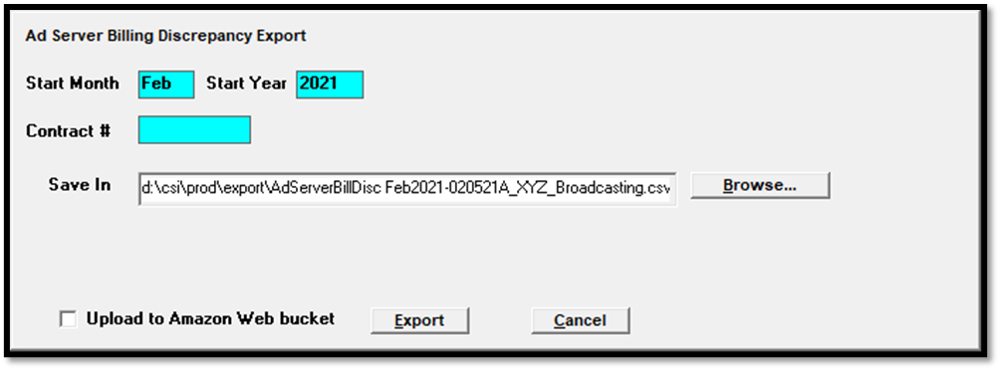
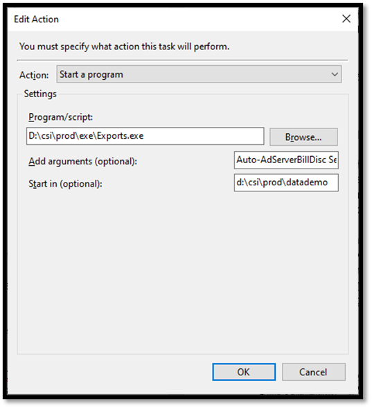
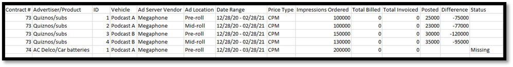

Ad Server Billing Discrepancy
The Ad Server Billing Discrepancy Export is run by month and year and is used to compare the number of impressions ordered against the number of posted impressions, calculate the difference, and show a status of “Missing” if there are no posted impressions for the month, for Ad Server contract lines (version 8.1 and above).
To run the export, from within the Traffic system, go to Task -> Export, and select the Ad Server Billing Discrepancy Export. Enter the month (using a three letter abbreviation or the number 1 through 12) and year to run the export for, then press the Export button to generate the export.

Automated Task Setup Instructions
This export can also be run as an automated task using the Exports.ini to configure the export parameters, and Windows Task Scheduler to run the export on a schedule. It can also be configured to upload the export file to an Amazon S3 web bucket.
Exports.ini Setup
The Exports.ini file, which is typically placed in the csi\prod\data folder (where the Traffic.ini file is also typically located), is used to configure the export settings that will be used by the automated export. This file must be created using a text editor if it doesn’t already exist.
Exports.ini example:
[PodBillDisc]
;StartPeriod=1
Export=d:\csi\prod\export
BucketName=exampleBucket
BucketFolder=exports
Region=exampleName
AccessKey=1234
PrivateKey=xyz
KeepLocalFile=No
The values on the Exports.ini are as follows:
StartPeriod: This is an optional setting. If it’s not defined, it will use the current month and year. If it is defined, the number of months specified as the “StartPeriod” value will be subtracted from the current month number to determine the starting month number.
Export: The location where the export file should be created.
BucketName: The name of the Amazon bucket you wish to upload the exported file to.
Region: Enter the AWS Region the Amazon bucket was created in. Supported regions: AFSouth1, APEast1, APNortheast1, APNortheast2, APNortheast3, APSouth1, APSoutheast1, APSoutheast2, CACentral1, CNNorth1, CNNorthWest1, EUCentral1, EUNorth1, EUSouth1, EUWest1, EUWest2, EUWest3, MESouth1, SAEast1, USEast1, USEast2, USGovCloudEast1, USGovCloudWest1, USWest1, USWest2
BucketFolder: If the file should be uploaded to a sub-folder of the bucket, specify it here. The folder name is case sensitive, and the folder name entered must match the actual bucket folder name. If there’s a typo, it will either fail to successfully upload or create a new folder. Spaces, commas, ampersands, and underlines are okay to use in the folder name. Slashes and the vertical bar symbol are not allowed. The BucketFolder parameter is optional. If not specified, the file will be uploaded to the root folder of the bucket.
AccessKey: A long term credential for an IAM user or the AWS account root user, used to authenticate requests to AWS.
PrivateKey: A long term credential for an IAM user or the AWS account root user, used to authenticate requests to AWS.
KeepLocalFile: Can be set to Yes or No. Defaults to No if not set. A setting of Yes will retain the local file in the export path specified. A setting of No will delete the local file after a successful upload to AWS.
Note: the Amazon bucket settings (BucketName, Region, AccessKey, PrivateKey, KeepLocalFile) are optional, but if the web bucket will be used, then all settings must be entered correctly, with the exception of the BucketFolder and KeepLocalFile, which are entirely optional.
Task Scheduler Setup
The Exports.ini is used to configure the export parameters. Windows Task Scheduler is used to set up the export to run as a scheduled task, using the export parameters from the Exports.ini. These steps describe how to set up the export as an automated task in Task Scheduler:
- Start Windows Task Scheduler and select “Action -> Create Task”.
- On the General tab, enter a name for the Task, such as “Ad Server Billing Discrepancy Export”.
- On the Triggers tab, select “New”, and configure the schedule on which to run the export. For example, it could be configured to run weekly, on a specific day of the week, at a specific time.
- On the Actions tab, press “New” and set the Action to "Start a program".
- Browse to the exports.exe (in csi\prod\exe) for the Program/Script.
- In the arguments section, enter the following: “Auto-AdServerBillDisc Section-xxxx” (without the quotes), where xxxx is set to the Section Name (in brackets) from the Exports.ini file for the parameters the export should use.
For example, using the Section Name of “PodBillDisc” from the Exports.ini example above, the argument should be set to:
Auto-AdServerBillDisc Section-PodBillDisc
7. Enter the location of the Traffic.ini for the Start In field, typically csi\prod\data.

8. Save the Scheduled Task.
Once the task has been configured in Task Scheduler, it will run on the defined schedule.
Export Details
The Ad Server Billing Discrepancy export creates a CSV file that can be opened in Excel.

The following information is shown on the export:
Contract: displays the contract number.
External Contract Number: for systems that get digital contracts pushed to Counterpoint from an external system, the external system order number.
Advertiser/Product: displays the advertiser name and product.
ID: the digital line item ID number.
External Line ID: for systems that get digital contracts pushed to Counterpoint from an external system, the external system line number.
Vehicle: the vehicle name.
Ad Server Vendor: the name of the Ad Server from the vehicle.
Ad Location: the ad location name.
Date Range: the line start and end date.
Price Type: CPM or Flat Rate.
Impressions Ordered: the Impression Goal from the contract line.
Total Billed: the cumulative total number of impressions billed, which can include over-delivery.
Total Invoiced: the cumulative total number of impressions invoiced, which is the number of billed impressions up to the Impression Goal amount.
Posted: the number of posted impressions for the month, retrieved either from an Ad Server or by manually entering them in the Manual Posting screen.
Difference: prior to invoicing the selected month, the difference is the posted amount for the month plus the total invoiced subtracted from the impressions ordered. After the selected month has been invoiced, the difference is the total invoiced subtracted from the impressions ordered. Under-delivery is shown with a minus sign.
Status: a status of “Missing” indicates there are no posted impression records for the month for a line.